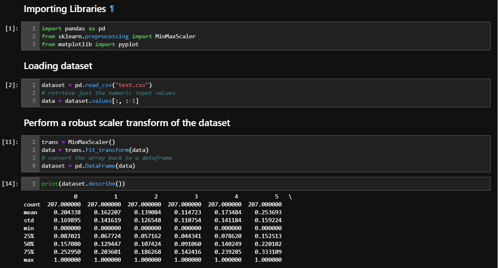

Data Normalization in Machine Learning
If you are a beginner to machine learning domain, you've undoubtedly puzzled a lot about the meaning and impact of the phrase "feature normalisation." If you've read any Kaggle kernels, you've almost certainly come across feature normalisation in the data preparation part. So, what exactly is data normalisation, and why is it so important to data practitioners?.

What is Normalization?
Typically, “normalising” a vector implies dividing by the vector's norm. It also frequently refers to rescaling
by the vector's minimum and range to make all of the elements lie between 0 and 1, bringing all of the values of
numeric columns in the dataset to a similar scale.
Lets Understand More About It !
Methods of Data Normalization –
- Min-Max Normalization
- Decimal Scaling
- z-Score Normalization(zero-mean Normalization)
1. Min-Max Normalization
The original data is transformed linearly in this data normalisation approach.
The minimum and maximum values from the data are retrieved, and each value is changed using the
formula below. This method rescales the range of the data to [0,1].
Here is the formula
 Here, Xmax and Xmin are the maximum and the minimum values of the feature respectively.
Here, Xmax and Xmin are the maximum and the minimum values of the feature respectively.
When the value of X is the minimum value in the column, the numerator will be 0, and hence X’ is 0.
On the other hand, when the value of X is the maximum value in the column, the numerator is equal to the denominator and thus the value of X’ is 1.
If the value of X is between the minimum and the maximum value, then the value of X’ is between 0 and 1.
For example, we might estimate the min and max observable values for a dataset as 30 and -10. Then we may normalise any value, such as 18.8, as follows:
y = (x – min) / (max – min)
y = (18.8 – (-10)) / (30 – (-10))
y = 28.8 / 40
y = 0.72
As can be seen, if an x value is supplied that is outside of the lowest and maximum values, the resultant value will not be between 0 and 1.
Prior to creating predictions, you may
look for these observations and either delete them from the dataset or limit them to the pre-defined maximum and lowest values.
The scikit-learn object MinMaxScaler may be used to normalise your dataset.
The following are some good practises for using the MinMaxScaler and other scaling techniques:
- Using given training data, fit the scaler. This indicates that during normalisation, the training data will be utilised to estimate the lowest and maximum observable values. This is accomplished by invoking the fit() method.
- Use the scale on training data. This implies you may train your model using the normalised data. This is accomplished by invoking the transform() function.
- In the future, apply the scale to data. This implies that in the future, you can prepare new data on which to make forecasts.
Let’s try it on the dataset of sonar.
The distributions have been modified, and the minimum and maximum values for each variable are now a crisp 0.0 and 1.0, respectively.
2. Decimal Scaling Normalization
Another approach for normalising in data mining is decimal scaling. It performs its job by converting an integer to a decimal point.
To normalize the data by this technique, we divide each value of the data by the maximum absolute value of data. The data value,
v, of data is normalized to v' by using the formula below –
Here
v' is the new value as a result of the decimal scaling.
v denotes the attribute's respective value.
where j is the smallest integer such that max(|v'|)<1
Example :
Assume the input data is as follows: -10, 201, 301, -401, 501, 601, 701
To normalise the aforementioned data, do the following steps:
Step 1: Maximum absolute value in supplied data(m): 701
Step 2: Multiply the provided data by 1000 (i.e. j=3).
The normalised data is as follows: -0.01, 0.201, 0.301, -0.401, 0.501, 0.601, 0.701.
3. Z-Score Normalization(zero-mean Normalization)
The Z-Score value is used to determine how much a data point deviates from the mean. It calculates
the standard deviations below and above the mean. It varies between -3 and +3 standard deviations.
Z-score normalisation in data mining is beneficial for data analysis where it is necessary to compare
a value to a mean (average) value, such as test or survey findings.
Here is the formula below -
v’, v is the new and old of each entry in data respectively. σA is the standard deviation and mean of A respectively.
Why Should You Normalize Variables ?
Similarly, the aim of normalisation is to convert the values of numeric columns in the dataset to a similar scale
while preserving variations in value ranges. Every dataset does not need to be normalised for machine learning.
It is only necessary when the ranges of characteristics differ.
Consider a data collection with two characteristics:
age and income (x2). Where the age range is 0–100, and the income range is 0–100,000 and above. Income is around
1,000 times greater than age. As a result, these two characteristics have very different ranges.
When we perform additional analysis, such as multivariate linear regression, the ascribed income will have a greater
effect on the outcome due to its higher value. However, this does not always imply that it is more important as a predictor.
As a result, we normalise the data to bring all variables into the same range.
Examples
See the following for examples of how normalisation is used in machine learning.
- Credit risk prediction: In this sample, all numeric data except the class column, the credit risk score, is normalised. The tanh transformation is used in this example to convert all numeric characteristics to values between 0 and 1.
Algorithms that apply normalization
Many machine learning methods demand that features be normalised so that they utilise a common scale.
- Instances are regarded as vectors in multidimensional space in linear classification methods. Some objective functions do not perform effectively without normalisation since the range of values in raw data fluctuates greatly. For example, if one of the features has a wide range of values, this feature governs the distances between points. As a result, numerical characteristics should be normalised such that each feature contributes about proportionally to the final distance. This can give considerable benefits in terms of speed and precision.
- By default, features are normalised before training when utilising the Logistic Regression and Averaged Perceptron algorithms.
The Big Question – Normalize or Standardize?
The age-old debate between normalisation and standardisation rages on among machine learning newbies. In this part, I'll expound on the solution.
- Normalization is useful when you know your data's distribution does not follow a Gaussian distribution. This can be beneficial in algorithms such as K-Nearest Neighbors and Neural Networks that do not presuppose any data distribution.
- Standardization, on the other hand, might be useful when the data has a Gaussian distribution. However, this does not have to be the case. Furthermore, unlike normalisation, standardisation has no boundary range.
However, whether you use normalisation or standardisation will ultimately rely on your situation and the machine learning method you are employing.
There is no hard and fast rule that says when you should normalise or standardise your data. You may always begin by fitting your model to raw, normalised,
and standardised data and comparing the performance to achieve the best results.
Fitting the scaler to the training data and then using it to transforming the testing data
is a smart technique. This prevents data leaking during the model testing procedure. In addition, scaling goal values is not always necessary.
When Feature Scaling matters
Some machine learning models, such as K-Nearest-Neighbors, SVM, and Neural Network, are essentially based on the distance matrix, commonly known as the distance-based classifier. Feature scaling is
critical in such models, especially when the range of the features is wide. Otherwise, characteristics having a wide range will have a big effect on distance computation.
Max-Min Normalisation, unlike k-nearest neighbours and artificial neural networks, generally allows us to modify data with various scales such that no single dimension dominates the statistics. Normalisation,
on the other hand, does not treat outliners particularly well. On the contrary, standardisation enables users to better handle anomalies and speed up convergence for particular computing techniques such as
gradient descent. As a result, we often favour standardisation over Min-Max Normalisation.
Example: What algorithms need feature scaling
Feature scaling is unimportant in algorithms that are not distance-based, such as Naive Bayes, Linear Discriminant Analysis, and Tree-Based models (gradient boosting, random forest, etc.).
The following example demonstrates the implications of standardisation. In it, we generate Gaussian data, extend one of the axes with a value to make them substantially incomparable, then plot the results. In an absolute sense, this plainly illustrates the stretched blobs. The data is then standardised and plotted again. We can now observe that both the mean and the variance of the axes have shifted to (0,0) when the data is normalised!
Importing the libraries
Summary
Let’s quickly summarize the topics we covered.
Because data originates from many sources, it is quite typical for each batch of data to have distinct characteristics. Thus, in data mining, normalisation is analogous to pre-processing and preparing the data for analysis.
This blog discussed the importance of utilising feature scaling on your data, as well as how normalisation and standardisation affect the operation of machine learning algorithms in different ways.
Remember that there is no right or wrong answer when it comes to when to utilise normalisation over standardisation and vice versa. It all relies on the data you're working with and the technique you're employing.
As a following step, I advise you to experiment with different feature scaling methods to see which works best – normalisation or standardisation? To preserve the continuity of this post, I propose that you utilise the
BigMart Sales data for that reason.
Further reading and resources
- Feature scaling: This article in Wikipedia explains the basic methods used for normalizing numeric data.
- How, When, and Why Should You Normalize / Standardize / Rescale Your Data?
- Normalization Techniques in Training DNNs: Methodology, Analysis and Application
- Scaling for Machine Learning: Understanding the Difference Between Normalization vs. Standardization
I hope you found this article useful. Happy learning!
Show your support
Clapping shows how much you appreciated my blog.